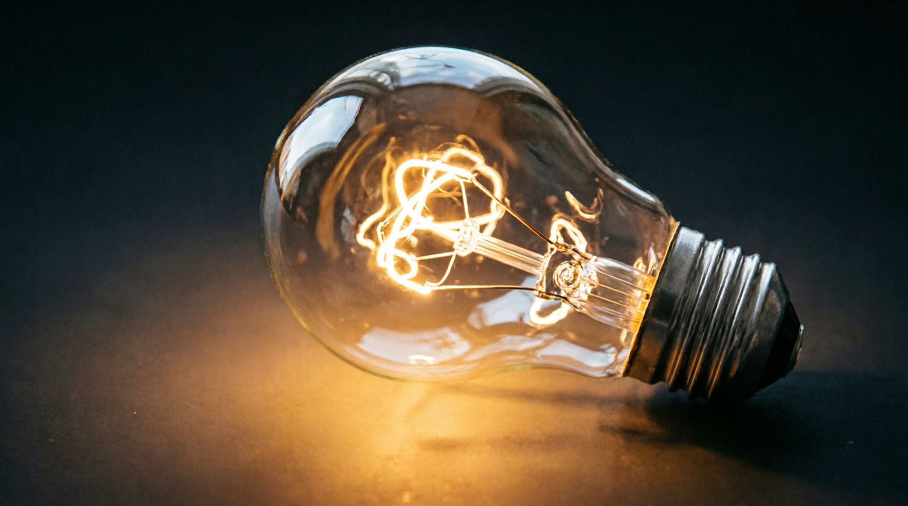
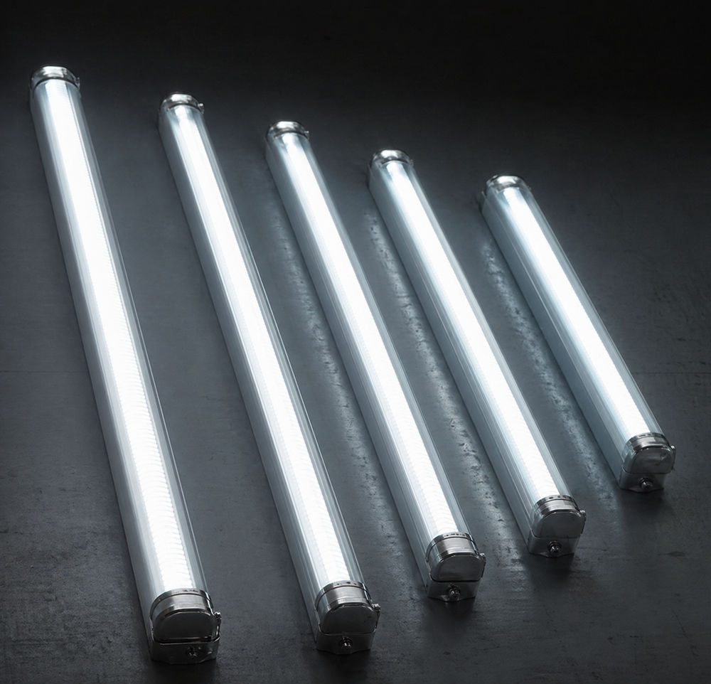
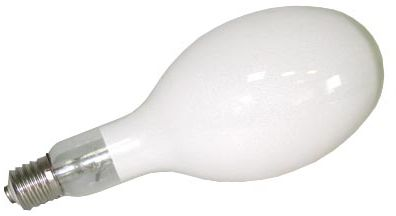
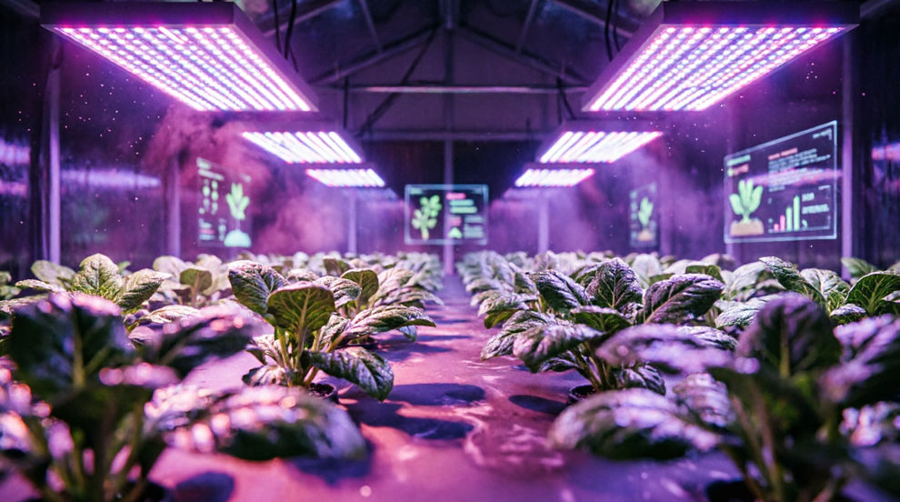

Фитолампы — источники света, специально приспособленные для освещения растений.
Большинству садовых и овощных культур требуется достаточно долгое время на вегетационный период. Для того, чтобы ускорить цветение и приблизить время сбора урожая используют рассаду, которую можно сажать уже в конце февраля. Световой день в это время года очень короткий. На широте Петербурга в феврале световой день длится от 8 до 10,5 часов. При этом солнце не поднимается над горизонтом высоко, так что освещенность под открытым небом не больше 6 000 люкс. В помещении даже при безоблачном небе освещенность составит не больше 2 000 люкс, в пасмурный день наберется от силы 500 люкс.
Это слишком мало для таких культур, как помидоры, перцы, баклажаны. Им нужно не менее, чем 15 часов освещения мощностью 6-8 тысяч люкс. Экзотические садовые культуры требуют еще на 4-5 тысяч люкс больше.
Недостаток света отражается не только на рассаде плодовых растений. Обычные комнатные растения в конце зимы страдают в условиях низкой освещенности. Поэтому стебли вытягиваются, бледнеет и меняется окраска листьев, сами листья становятся более мелкими. В целом они растут медленнее, не дают новых побегов, теряют внешний вид. В сочетании с низкой температурой и сыростью недоосвещенность делает растения более подверженными различным заболеваниям.
Поэтому в темное время года с октября по март комнатные растения и рассада для огорода нуждаются в дополнительной подсветке. Потребность растений в дополнительном свете возрастает еще больше, если ваши окна выходят на северную сторону и прикрыты козырьком или балконом.

Почему обычные лампы не подходят
Однако с задачей дополнительного освещения растений справится не всякая лампа. Обычная лампочка накаливания для этого не подходит. Она дает освещение другого спектра и не той цветовой температуры, которая требуется растению. Избыточное тепло, выделяемое лампами накаливания, вредит растениям, поскольку испаряет влагу из листьев и перегревает их. Лампы накаливания к тому же крайне неэкономичны, их КПД очень низок. В среднем только 5% энергии бытовая лампа накаливания переводит в световую энергию, остальное теряется и превращается в тепло.

Люминесцентные лампы
Чуть более эффективны для освещения рассады и комнатных растений люминесцентные лампы дневного света. Это, например, такие модели как ЛД-60 и ЛБ-60, знакомые всем с детства «трубки». Эти лампы были изобретены в начале XX века. Потребляемая мощность такой лампы сравнима с мощностью бытовой лампы накаливания (60 Вт), однако, света они дают больше. Эти лампы можно использовать для подсветки растений, но с некоторыми оговорками.
Люминесцентные лампы громоздки и требуют специального осветительного оборудования (под цоколь G13), которое в домашних условиях занимает много места. Эти лампы содержат пары ртути, поэтому требуют очень аккуратного обращения и последующей утилизации. Об утилизации придется задуматься достаточно скоро: фактический ресурс таких ламп не превышает 10 тысяч часов. Спектр этих ламп (особенно холодных синих) ближе к тому, что нужен растениям, но только частично. Лампы имеют рассеянный свет, их требуется крепить ближе к рассаде или растениям, постоянно поднимая по мере их роста. Обязательно нужно сооружать рефлектор, чтобы использовать свет по максимуму.

Ртутные лампы
Значительно ярче светят физиологические ртутно-люминесцентные лампы дугового типа. Их потребляемая мощность высока, от 250 до 350 Вт. Эти лампы знакомы нам по уличным фонарям. Использование этих ламп в домашних помещениях также не самая простая задача. Светящим элементов в них является столб дугового разряда, электрическая дуга. Они очень капризны в отношении электрической мощности. При снижении электрического напряжения на 10-15% их световой поток снижается на 25-30%. В наших домах, особенно зимой, когда многие используют отопительные приборы, такие скачки напряжения нередки.
Натриевые и металл-галогенные лампы в большей степени соответствуют нашим запросам (их удобнее применять в домашних условиях), но не полностью соответствуют запросам наших растений. Эти лампы дают красноватый и оранжевый свет, но не дают синего света, который требуется для успешного роста растений.

Светодиодные фитолампы — оптимальный выбор
Оптимальным источником света для цветов и растений с момента их появления служат светодиодные лампы (LED).
Поскольку ЛЕД лампы для растений имеют малую мощность (от 2 Вт до 20-50 Вт), их постоянное использование мало отражается на счете за электричество.
Их спектр свечения точно подобран под потребности любых растений, использующих процесс фотосинтеза.
Они безопасны, поскольку не содержат вредных элементов и не могут разбиться.
Они долговечны — от 50 000 часов до 100 000 часов непрерывного использования.
Светодиодные лампы для растений практически не греются, об них не может обжечься ребенок или животное.
ЛЕД лампы компактны и подключаются в светильники со стандартным цоколем.
Основным и практически единственным недостатком светодиодных ламп для освещения растений по-прежнему остается их относительно высокая цена.